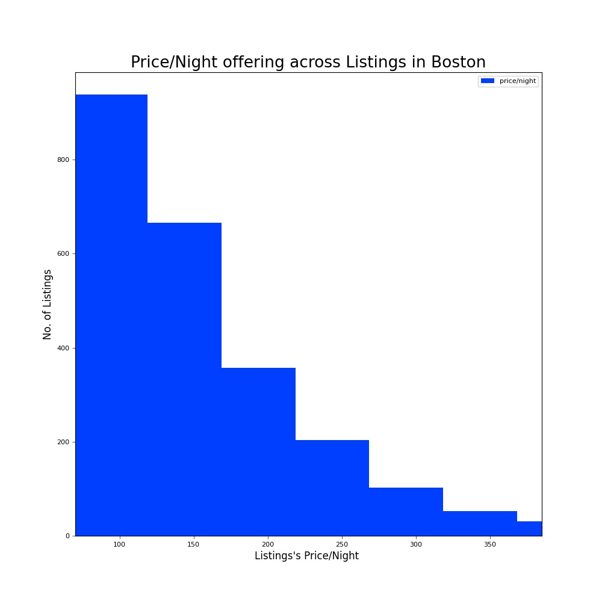
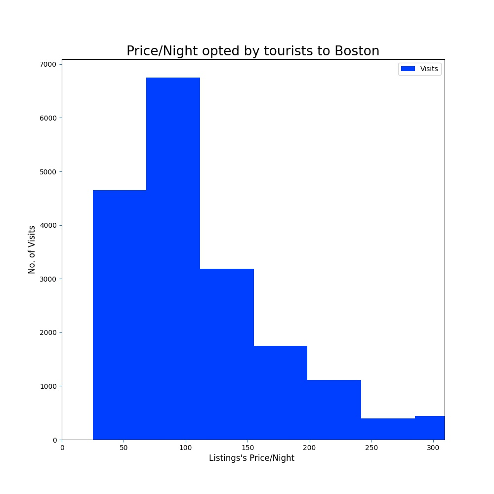
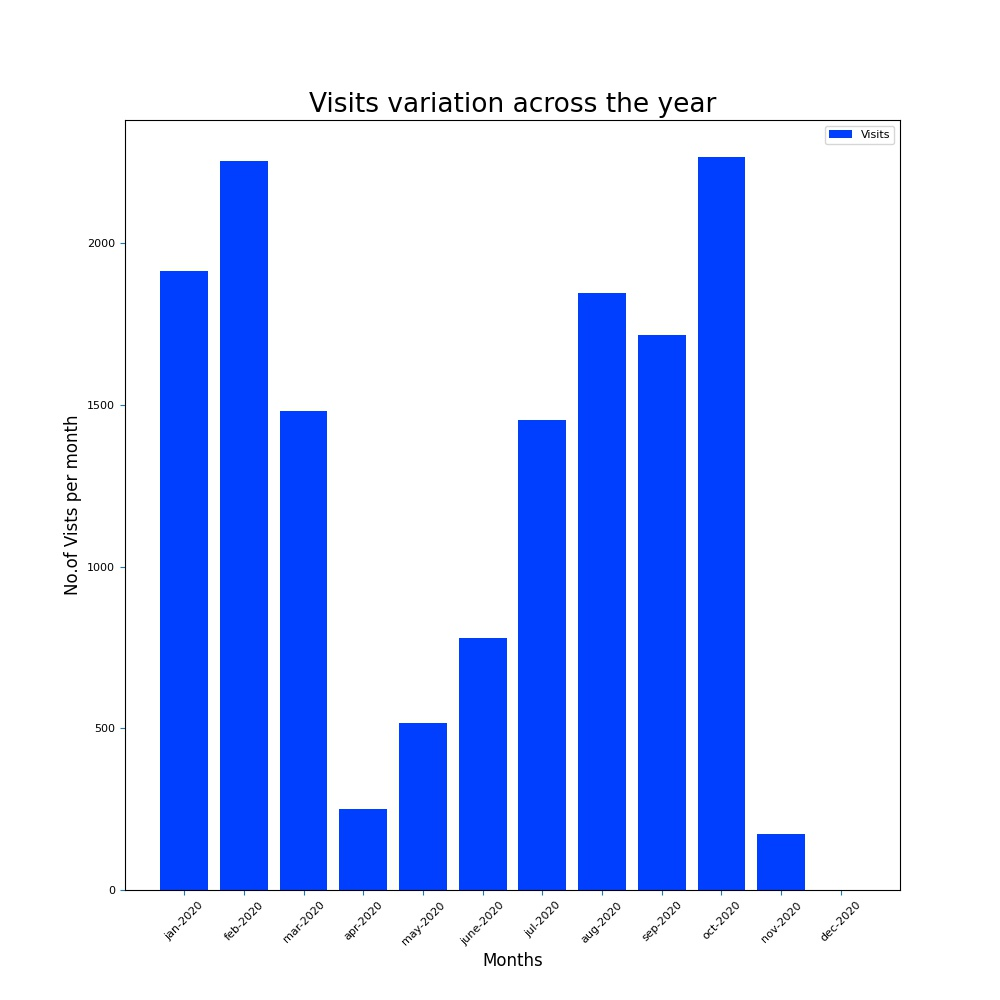
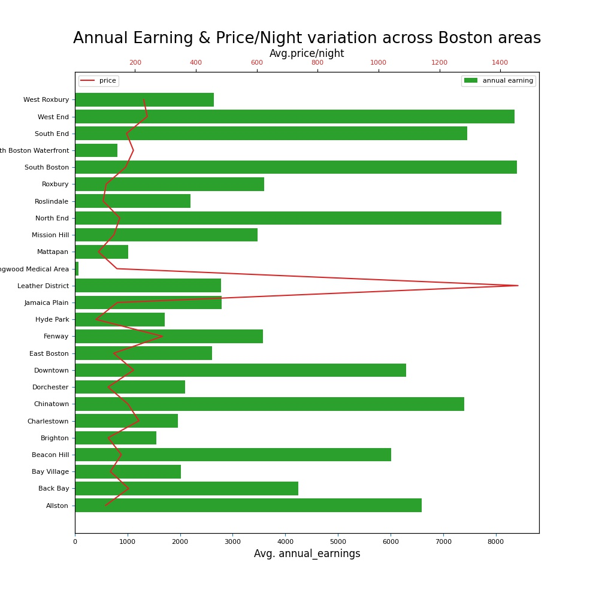
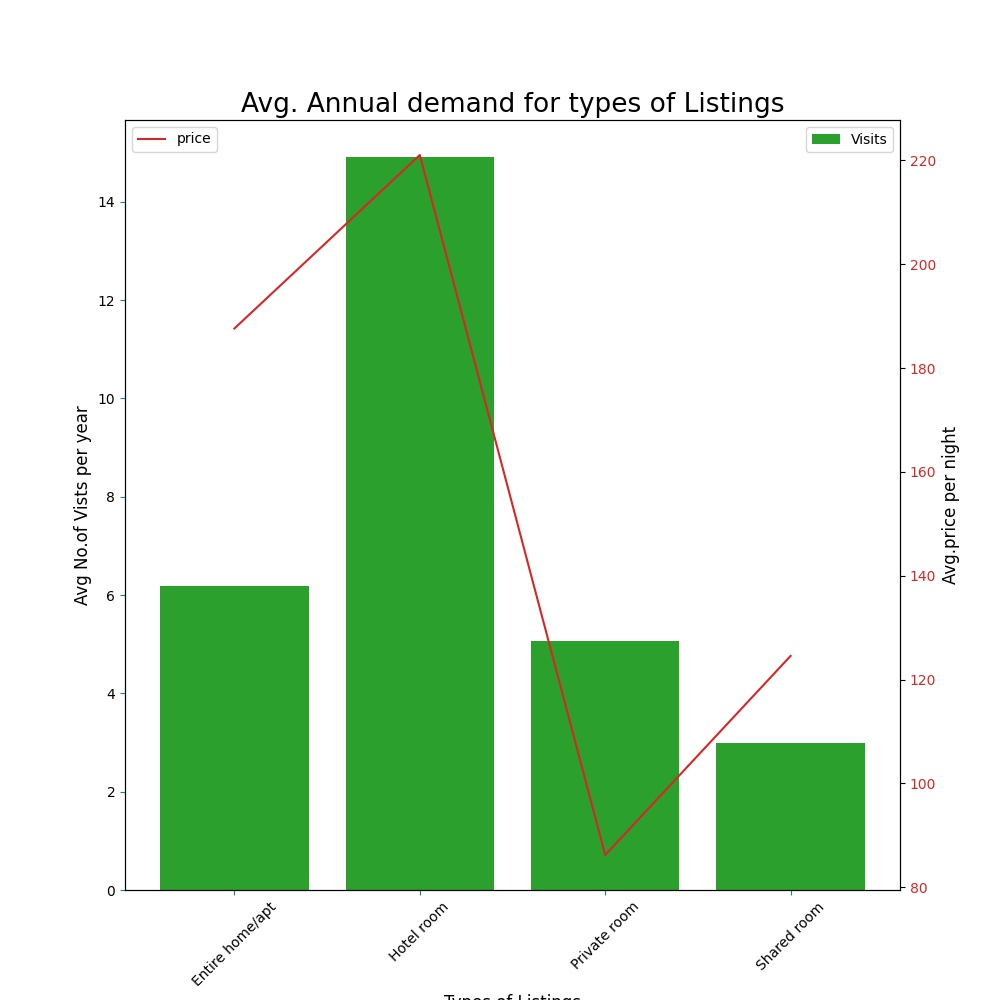
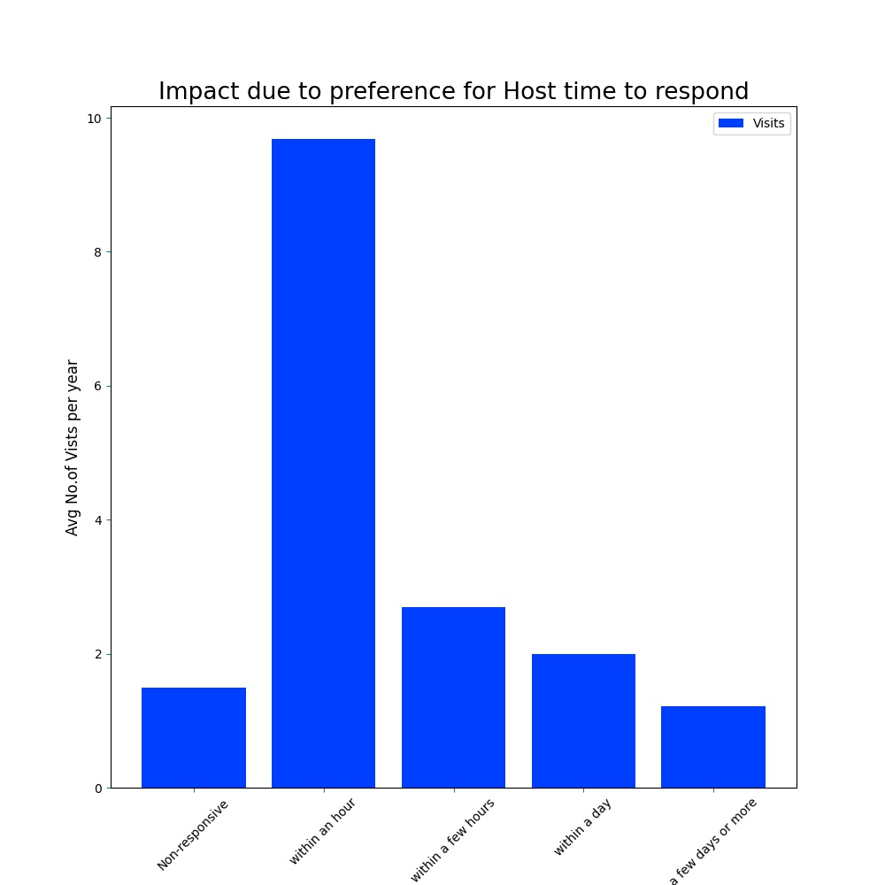
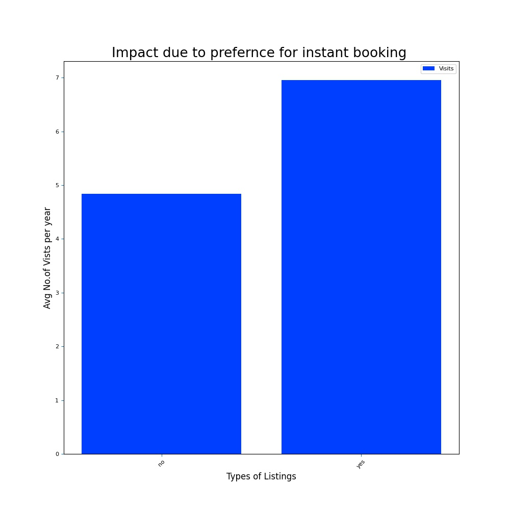
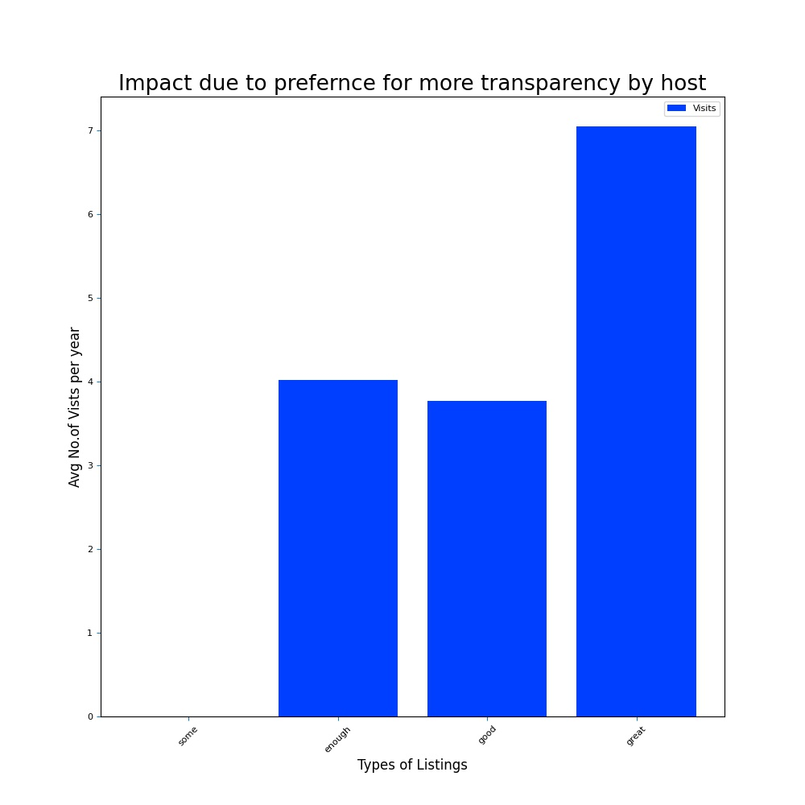
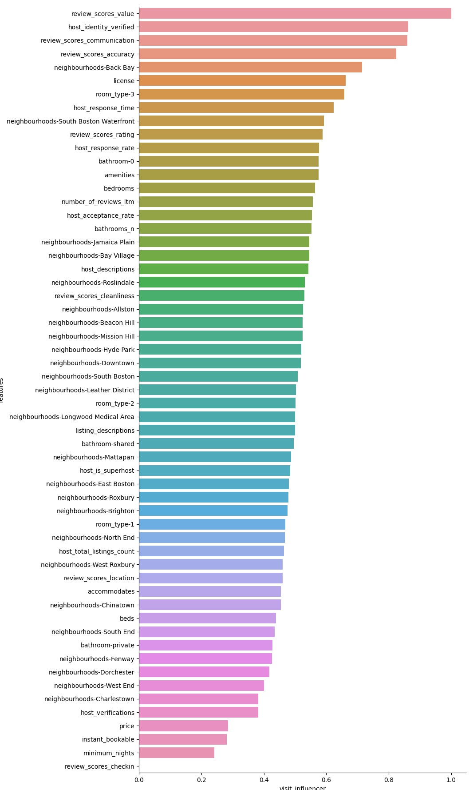

{kind=link}
Is there a monetary upside in listing a spare room on Airbnb ?¶
- Introduction:
Airbnb has tremendously helped the tourism to flourish in new locations which were not supported by hotel industry. They have done this breakthrough by providing online service to regular home owner, or even to any ‘Bed & Breakfast(b&b)’ service provider, by enabling them to allow tourists, or any regular visitor, to stay in the owner’s home at affordable price during visit to the home owner’s city . Thus this service brings additional revenue options to local home owners.
- Motivation:
From Airbnb perspective, inorder to grow their service in each city/region they would like to empower their home owners with data so they can provide their b&b service in economical & sustainable fashion not only for home owners as well for tourists/visitors. We presume that Airbnb can enhance this growth by providing transparency to potential monetrary benefits of listing their proprerties. To build this transparency Airbnb can provide insights from data of already occuring transactions between home owners and visitors in their city. Thus this transparency can encourage to more suitable home owners to list their availble house/apartments and in process supporting properous market of tourism in their city.
The article will try to evaluate and present the potenial monetary benefits for home owner when they list their apartment/house on Airbnb. This evaluation is based on the publicly available data 1 . The focus remains primarily on the Boston city’s data and evaluated only on last twelve months (Jan 2020-Dec 2020). Though python scripts 2 created to evaluate the results can be tweaked as required and similar evaluation can be done for any city or any time period. So let’s dive into the evaluation and results 3:
Q1: What is average earning potential for a general listing within a given city? 4
Thus in Fig 1: earning graph, reveals the expected inverse relationship of earning vs probability of higher earning. This trend is applicable to any normal service market. This relationship could also been seen in the price/night offerings in a city as shown below :
Figure 2¶
Above Fig 2: price offering graph of the Boston City’s Airbnb market, has average offering of $152 price/night to vistors.
So let’s find what was the most opted price/night by visitors.
Figure 3¶
The above histogram (fig 3) indicates, $124 price/night was the most preferred by the visitors.
Q2: Does visit to the city is concentrated in specific months or is distributed across the year ?
An owner would like to know whether the indicated annual earning is gained in specific months or the earning is distributed consitently across the year. The specific term used for this effect is called “Seasonality in demand”. This can be evaluated by mapping the visits across a year into specific months. The year long variations in average number of visits has been shown below in fig 4:
Figure 4¶
- Takeaway:
Well the demand is almost consitent through out the year with slight decrease in April-June months.
Q3: The average earnings looks OK, but what are the preferences of visitors which governs the different asking price ? 6
As it is evident, there is huge range in the asking price by the listings, so one would like to the factors that helps to bargain higher price or higher booking in a year. Let’s inspect some of them:
- Geographic Demographics :
The demand and average price varies in differnt sections of the city.
Figure 5¶
- Kind of Listing :
The kind of rental space is one of the key factors which differentiate the listing in terms of asking price and the amount of expected visits per year. This difference is evident in the fig 6 where each category has considerable average asking price/night as compared to each other.
Figure 6¶
- Host Responsiveness :
The time taken by the host to sort out the query or accept the visitor’s request also plays factor in increasing the selection of one’s listing.
Figure 7¶
Even features like instant booking of your listing can enhance chances for getting selected.
Figure 8¶
- Details’ transparency by Host :
The amount of details provided by the host, may also influence the decision in opting out the property.
Figure 9¶
- Takeaway:
Providing the utility & convenience preferred by the visitors, the listings can have options to bargain higher ask price. The home owner can take leverage by incorporating the indicated inferences from this data to enhance the demand for his/her listing.
Q4: What are the top 3 factors which influence the selection of a listing ?
As demonstrated above, they are numerous factors which affect the decision of vistors in selection of a listing. Some of them can be controlled by owner while others are situational i.e out of the hands of the owner.
So to rank influences of the factors, we built a linear model (using SVR 7) and the the models’ weight-coefficients were used to rank the factors on a relative scale. Thus from the simple proficent ML-model 8, probable factors and their relative impact was established to rank them. This rank can help owners to decide which factors he may priortize to adopt to increase the chance of selection of his listings.
Following figure 10 shows the relative impact of various factors in predicting the number of visits to various kinds of listing 9. In fig 10 as the value of relative-influence is more near to 1, better the rank of that factor as compared to others. Thus the relative rank (top is better) of the probable factors is as follows:
Figure 10¶
- Takeaway:
- Various factors have different level of influence on the outcome of selection of a listing by a random visitor. Among them top 3 factors which influence the visitors decision making are :
Review rating of that listing by prior visitors (review_scores_value).
Whether the host has been verified (host_identity_verified).
Communication rating (review_scores_communication) . This means that visitors prefer the host who communicate efficiently during their decision making process of selection of listing.
Conclusion:
From the data of Boston City (Jan/2020-Dec/2020) of Airbnb listings, we were able to gather following insights which will help a home owner in making the decision prudently about listings his property on Airbnb.
Data revealed that the most suitable price (on per night basis) for a visitor is approx $124.
The average annual earning among the listing of Boston city was $4179.
Review ratings, host verification & communication rating were top 3 crucial factors which influence the visitors choices in selection of a listing for their stay.
The demand of visits to city remains almost consistent throughout the year.
We also looked into the level of impact by individual factors in the selection. This suggested that utility and convenience provided by this factors will help to surge up the demand and can have better asking price for a listing.
So will YOU, list your spare room on Airbnb?
Footnotes
- 1
The publicly available data can be accessed from this url
- 2
Source code is available as github repository
- 3
Detailed & thorough analysis, working of the code and the related underlying assumptions can be checked out here (a jupyter notebook). Only final results and visualization is demonstrated here to make it comprehensible for everyone.
- 4
Here city is to be considered as Boston City. As the scope of geographic region for analysis is only Boston City.
- 5
- 6
The earning seems to be low this year as there may be impact due to COVID-19 pandemic. We will provide the further study to understand year on year basis before COVID-19
- 7
Since the data values has was not completely linear and has some non-linear variance, SVR was selected instead of lasso/ridge model inorder to handle presence of non-linearity in the data.
- 8
- 9
The findings is applicable only for factors associated with Airbnb listings of Boston City since the model was trained only this city’s data.